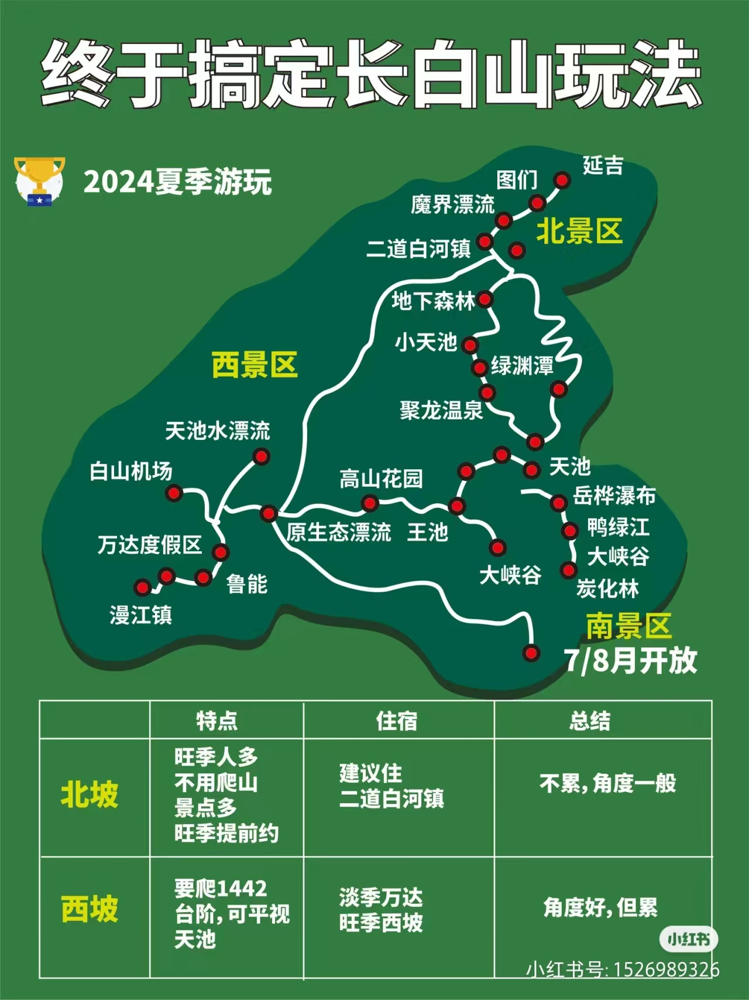

长白山旅行·路线 

线路1
D1:长春集合-接机/站-入住酒店
D2: 长春-百年老树-趣挖人参-丛林UTV-鲁能度假区
D3:森系漂流-丛林徒步-野奢下午茶
D4:鲁能-长白山北景区轻徒步-二道白河
D5:长白山自然博物馆-虎园-非遗扎染体验
D6:二道白河-麦田油画体验-朝鲜民俗园写真-延吉散团
线路2
D1:出发地-延吉接机-入住酒店
D2:延吉-朝鲜民俗园旅拍-绘画乡野麦田-美人松林轻徒步-二道白河
D3:长白山北景区-天池-绿渊潭-户外野餐-山野厨房
D4:长白山自然博物馆-虎园-非遗扎染体验-趣挖人参-万达度假区
D5:森系漂流-丛林徒步-野奢下午茶-万达度假区
D6:万达-征西滑道-溜索-送机回家